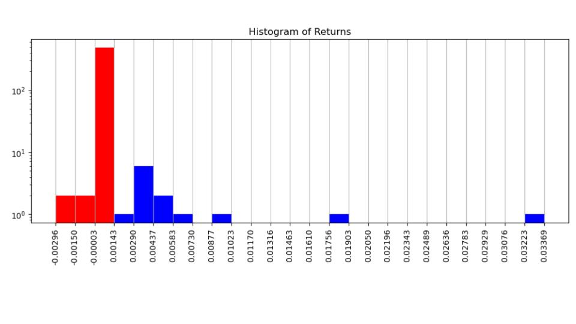
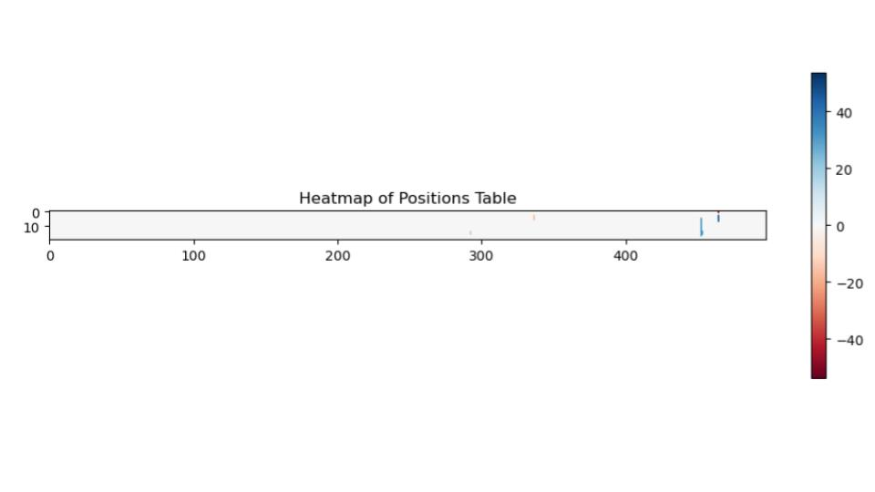
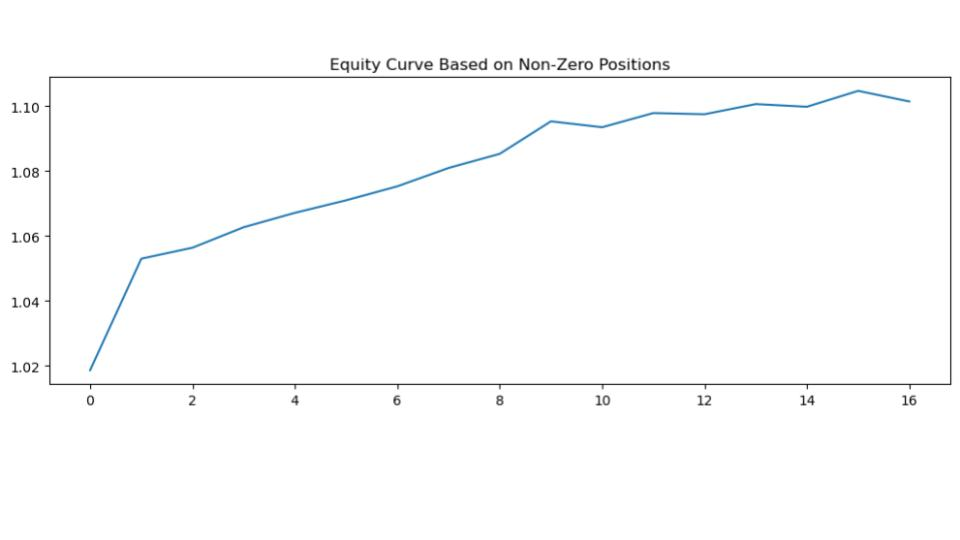

PairB&B: "... Backed by math. Designed for markets. Inspired by simplicity ..."
Web pages under construction
A Bread and Butter Style
Pair Trading System:
Generalized Pairs Trading "For Dummies"
(PairB&B)
This Page Isn’t About Machine Learning...
Here, we document a few simple ways that machine learning can be applied to the data generated by our trading Automata, so as to improve our performance metrics ( see more about performance and profitability here ). The goal is to keep it straightforward. The underlying principles here align with many of the core applications where machine learning shows promise. We have tested a number of techniques, including reinforcement learning. However, after evaluating many different methods of classification and regression on a reasonable amount of simulated portfolio data, we found that random forest and gradient boosting approaches are still applicable in the context of large feature spaces with data that has limited signal to noise yet is straightforward to train and tune. Also, the results, at least for now, appear robust. Stay tuned for more...
Example of Pair Trader Running a Portfolio Simulation
The PairTrader can be run for portfolio simulation, where datablocks and settings are inputs. Settings include the start and end of the evaluation period (test data period). Below is an example output from runtime:
number of entries in data table: 505
number of days for input: 505
data start date: 2022-09-13, data end date: 2024-09-11
full date range total periods: 505
periods per day approx: 1.0
For this run using post-signal generation and not halflife!
... evaluating step t: 475 @2024-08-01 00:00:00 out of final step: 495 @2024-08-29 00:00:00...
preprocessing historical data block from index datetime 223 2023-08-03 00:00:00 until 474 2024-07-31 00:00:00
corresponding with date list [223] until [474]
checking length of historical return block same as lookback period: True
There are 103 columns being filtered that have fraction of zero returns > threshold: 0.15 !!!
There are 112 Pair trading z-score signals after cointegration testing and metrics.
There are 87 Pair trading z-score signals after the halflife filter.
Checking pairs are on opposite sides of the principal eigenvector and check for any displacement if focus symbol is present: 20
There are 68 Pair trading z-score signals after filtering by penultimate pairs.
There are 19 Pair trading z-score signals after filtering by OU mu (i.e., signal mean).
There are 19 Pair trading z-score signals after filtering by OU sigma (i.e., decay strength).
There are 19 Pair trading z-score signals after filtering by OU R2.
There are 19 Pair trading z-score signals after filtering by OU Phi Std Err.
Running grid searches on historical data only...!
Running grid searches using the factor model...!
There are 5 entries in the pairs list for parameter optimization
finished grid search on historical data entry 1/5 pair: VDHG VHY elapsed time: 2.6587 seconds
finished grid search on historical data entry 2/5 pair: VDGR VHY elapsed time: 2.6500 seconds
finished grid search on historical data entry 3/5 pair: MVW VDHG elapsed time: 2.6416 seconds
finished grid search on historical data entry 4/5 pair: PGF VDHG elapsed time: 2.6505 seconds
finished grid search on historical data entry 5/5 pair: VGAD VHY elapsed time: 2.6429 seconds
Generating forward trading signals starting at 2024-08-01 00:00:00 with length of 20 periods ending at 2024-08-28 00:00:00
Positions Table finished allocating...!
Evaluation period setting: 20, actual holding period: 17
Mean returns for holding period: 0.082826112771025
Mean returns for evaluation period: 0.0974424856129706
Std return over evaluation period: 0.03587820214299237
Sharpe for evaluation period: 2.7159244274452248
Profit from initial for strategy: 1.10139393426316
As per user-specified inputs, the date on which The B&B Automaton will begin to create an N-length (eg. 20 days) simulated portfolio is on the first business day after the designated training period. The simulated portfolio is essentially a backtest. A market ecosystem timeseries datablock must include all required dates. The Automaton is then performing multiple backtests and screening using the designated training data and then using this information (i.e. which stocks to trade on and optimal trading parameters) to then generate the N-length portfilio with the designated test data.
Once the simulation is finished running it will also output a graphical version of the results.
These are counts of the percent returns \( \%r \) for the portfolio block, where \( \%r = \%r_{\text{stock}} \times \text{position} \)

This is the position-weighting block. Here the horizontal dimension represents all avaliable stocks from the input timeseries datablock. The vertical dimension is the portfolio period (in this case, 20 days). Long positions are represented by positive values; likewise, short positions are represented by negative values. Zero is used to indicate a null position. Prior to calculating the \( \%r \), position weights are normalized.

This is the equity curve for the portfolio period.
Machine Learning - General Approach and Workflow.
Multiple hyper-settings that control the B&B trader are adjusted, which changes the way the trader behaves, and as a result, different stocks will be traded with different trading parameters. The resultant portfolio over any historical time period will be different, and most importantly, the evaluation signal is always from unbiased test data. The automaton thus represents a layer of abstraction that can be used to simulate many automated trading scenarios using a condensed set of hyperparameters. The goal of machine learning is to predict an optimized set of hyperparameters. This workflow is represented in the scheme below.
Jupyter notebook with Supervised Learning Classification example.
Demo Supervised Learning EDA Random Forest (.html view in browser)
Demo Supervised Learning EDA Random Forest (as .ipynb)
Backtesting and auxillary data used in the notebook
Simualted portfolios with various hyperparameters
Backtesting data augmented with PCA features with one-day and five-day lookback from evaluation date
Backtesting data augmented with PCA features with one-day lookback from evaluation date
Machine Learning Questions
- Is there always a combination of hyperparameters that leads to a positive PNL?
- Is there one combination of hyperparameters that generally helps to reduce risk and maintain a steady profit?
- If we supplement this backtesting data with other time-dependent features (e.g., market indices, exchange rates, econometric indicators), can we predict which hyperparameter setting to use that will give us the best Sharpe ratio or cash returns in the future?
If you are using any notebooks or data, please note that the contents of this page are subject to copyright (see below). Kindly reference appropriately. Don’t hesitate to connect with us. !!!